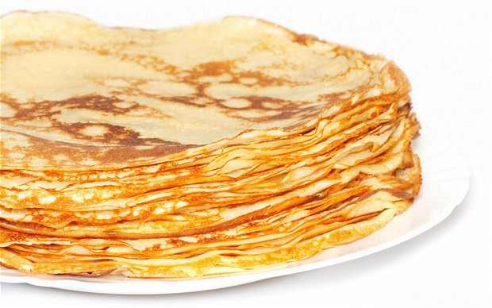
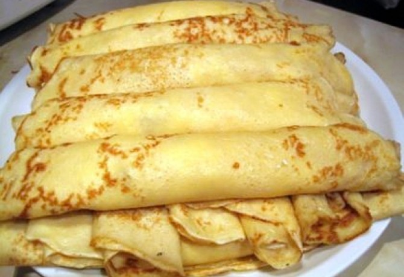
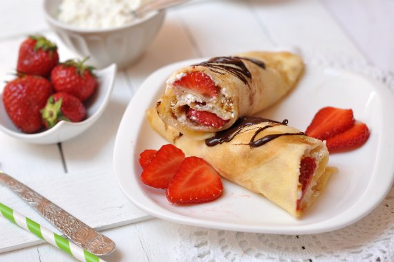

Palacsinta
Palacsinta
Hozzávalók(kb. 10 palacsintához)

- 1 tojás
- 1 cs. vaniliás cukor
- csipet só
- 15 dkg liszt
- kb. 0,5 dl olaj
- szénsavas víz, amennyit a tészta felvesz
Elkészítés

- A tojásokat a cukorral és a sóval habosra keverjük
- Hozzáadjuk a lisztet
- Lassan adagolva a vizet addig kevergetjük míg csomómentes nem lesz
- Hozzáadjuk az olajat
- Vízzel tovább folyósítjuk a tésztát, amíg az állaga jó lesz
- Az első palacsinta sütése előtt a forró serpenyőbe egy kevés olajat öntünk
(a következő palacsintáknál erre már nincs szükség, maximálisan elegendő, ami kisül a tésztából).
- A palacsintákat egyenként kisütjük, amjd ízlés szerinti töltelékkel kínáljuk.
Jó étvágyat!
